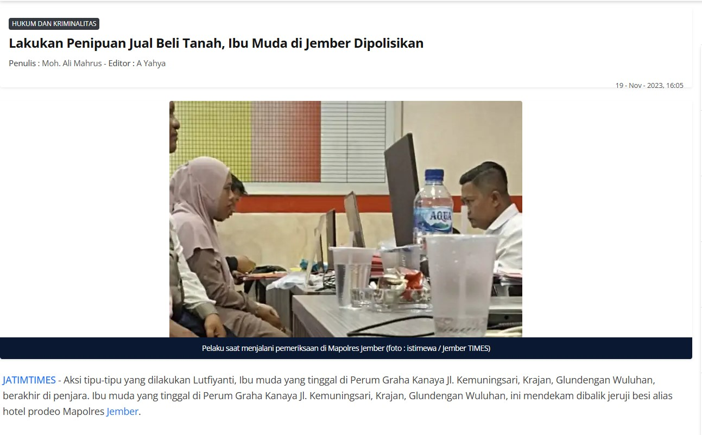
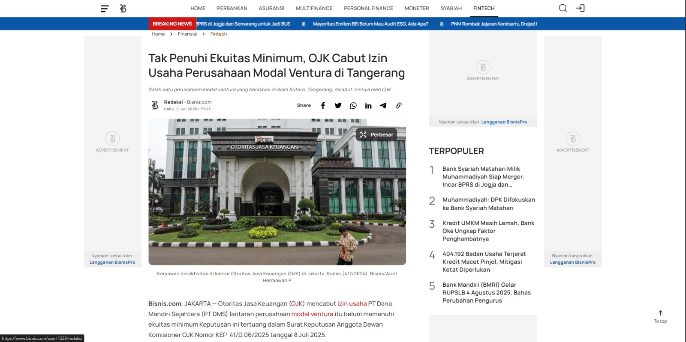

Konsep dan Karakteristik Pemasaran Islami
Pemasaran Islami adalah pendekatan pemasaran yang berlandaskan pada prinsip-prinsip Islam...
Prinsip Pemasaran Islami
- Tauhid: Semua aktivitas pemasaran dilakukan sebagai bentuk ibadah kepada Allah.
- Keadilan: Tidak boleh ada praktik kecurangan atau eksploitasi.
- Maslahah: Pemasaran harus memberikan manfaat bagi semua pihak.
Etika/Akhlak dalam Pemasaran
Etika dalam pemasaran Islami sangat ditekankan untuk menciptakan lingkungan bisnis yang sehat dan berkah...
Strategi dalam Pemasaran
Untuk mencapai keberhasilan dalam pemasaran Islami, diperlukan strategi yang sesuai dengan prinsip Islam...
Kejujuran dalam Jual Beli: Pentingnya Transparansi dalam Transaksi
Kejujuran dalam jual beli adalah hal yang sangat penting untuk menciptakan transaksi yang adil dan menguntungkan kedua belah pihak, baik penjual maupun pembeli...
Mengapa Kejujuran Itu Penting?
1. Membangun Kepercayaan: Kejujuran adalah dasar hubungan antara penjual dan pembeli...
2. Menghindari Masalah: Menyembunyikan kekurangan barang bisa menyebabkan komplain atau kerugian...
3. Meningkatkan Reputasi: Penjual yang jujur mendapatkan pelanggan loyal...
Bagaimana Kejujuran Diterapkan dalam Jual Beli?
1. Memberikan Informasi yang Jelas: Penjual harus memberikan informasi yang akurat...
2. Tidak Menyembunyikan Kekurangan: Cacat barang harus diberitahukan...
3. Menawarkan Harga yang Wajar: Hindari menaikkan harga secara tidak wajar...
Kesimpulan
Kejujuran dalam jual beli adalah kunci untuk menciptakan transaksi yang adil dan lancar...

Opini pribadi saya tentang kasus penipuan jual beli tanah di Jember ini sangat menyayangkan.
Praktik penipuan seperti ini jelas tidak hanya merugikan korban secara materi,
tetapi juga
merusak rasa kepercayaan dalam transaksi bisnis. Dalam Islam, kejujuran dan amanah adalah
prinsip yang sangat ditekankan, bahkan dalam jual beli.
Penjual yang tidak bertanggung jawab,
apalagi dengan cara menipu, tidak hanya melanggar hukum, tetapi juga berdosa di hadapan Allah.
Jual beli tanah seharusnya dilakukan dengan penuh keterbukaan dan transparansi. Membeli atau
menjual properti, yang biasanya merupakan transaksi besar,
membutuhkan kepercayaan yang sangat
tinggi antara penjual dan pembeli. Penipuan seperti ini mencoreng citra dunia usaha dan bisnis
yang seharusnya berjalan dengan prinsip keadilan dan kejujuran.
Penting bagi kita untuk selalu berhati-hati dalam melakukan transaksi dan juga lebih
mengutamakan integritas dalam setiap tindakan. Selain itu, pihak berwajib perlu lebih
memperhatikan kasus-kasus penipuan semacam ini agar tidak merugikan pihak lain yang hanya
mencari nafkah secara halal.
a. Pengertian Bisnis
Dalam perspektif Islam, bisnis adalah segala bentuk aktivitas ekonomi yang bertujuan untuk memenuhi kebutuhan manusia melalui pertukaran barang dan jasa yang halal, jujur, dan adil, serta tidak melanggar syariat Islam. Bisnis kontemporer Islami merujuk pada praktik bisnis modern yang mengikuti prinsip-prinsip Islam, seperti: Menghindari riba (bunga), Menghindari gharar (ketidakjelasan), Tidak melakukan penipuan atau manipulasi, Mengedepankan etika dan keadilan. Dalam Al-Qur’an, Allah berfirman: “Allah menghalalkan jual beli dan mengharamkan riba.” (QS. Al-Baqarah: 275) Jadi, bisnis dalam Islam bukan sekadar mencari keuntungan, tetapi juga sarana ibadah dan kontribusi terhadap kesejahteraan masyarakat.
b. Dasar-Dasar Regulasi Bisnis
Fiqh bisnis kontemporer Islami adalah cabang fiqh muamalah yang mengatur interaksi dan transaksi ekonomi umat Islam dengan tetap relevan terhadap perkembangan zaman. Dasar-dasar regulasi bisnis dalam Islam meliputi: Al-Qur’an dan Hadis – sebagai sumber hukum utama. Ijma’ (kesepakatan ulama) dan Qiyas – untuk menjawab persoalan baru. Kaedah Fiqhiyyah – seperti: Al-aslu fil mu’amalat al-ibahah (hukum asal muamalah adalah boleh kecuali ada dalil yang melarang), La darar wa la dirar (tidak boleh merugikan dan saling merugikan). Contoh penerapan kontemporer: Transaksi online harus memenuhi prinsip akad yang jelas dan tidak mengandung riba atau penipuan. Investasi syariah menghindari sektor haram (misalnya alkohol, judi).
c. Tujuan Bisnis
Dalam Islam, tujuan utama bisnis bukan hanya mencari keuntungan duniawi, tetapi juga keberkahan dan ridha Allah SWT. Tujuan bisnis kontemporer Islami meliputi: Mencari nafkah halal dan menjauhkan diri dari yang haram. Memberikan manfaat bagi masyarakat (menjual produk/jasa yang baik dan dibutuhkan). Menegakkan keadilan dan kejujuran dalam transaksi. Menghindari eksploitasi dan kecurangan. Menjalankan fungsi sosial: seperti zakat, infak, sedekah, dan CSR Islami. Mengembangkan ekonomi umat dan menciptakan keadilan distribusi kekayaan.
d. Aplikasi E-Commerce dalam Bisnis
E-Commerce Islami adalah pemanfaatan teknologi digital untuk melakukan transaksi bisnis secara online dengan tetap mematuhi syariat Islam. Contoh aplikasi e-commerce Islami: Marketplace syariah seperti BukaLapak Syariah atau Hijup. Sistem pembayaran halal (tanpa riba), seperti penggunaan e-wallet syariah atau bank syariah online. Dropshipping & reseller syariah, dengan akad yang jelas antara produsen, reseller, dan pembeli. Prinsip yang harus dijaga dalam e-commerce Islami: Transparansi akad dan harga. Barang dan jasa harus halal. Tidak ada unsur penipuan atau manipulasi ulasan. Sistem pembayaran dan pengiriman harus jelas. Tidak melibatkan riba dalam transaksi keuangan. Bisnis digital yang syar’i bukan hanya legal, tapi juga spiritual—menggabungkan efisiensi teknologi dengan etika ilahiyah.
Bank Syariah dan Konvensional: Dua Sistem, Satu Tujuan, Beda Jalan
Tentu, berikut adalah artikel ilmiah ringan yang membahas tentang lembaga keuangan syariah, khususnya perbankan, dan perbedaannya dengan lembaga keuangan konvensional. Bank Syariah dan Konvensional: Dua Sistem, Satu Tujuan, Beda Jalan Di tengah lanskap perekonomian modern, masyarakat kini memiliki lebih banyak pilihan dalam mengelola keuangan. Dua sistem utama yang menonjol, khususnya di Indonesia, adalah perbankan syariah dan perbankan konvensional. Meskipun keduanya bertujuan untuk menjadi intermediator keuangan yang mendorong pertumbuhan ekonomi, landasan filosofis, prinsip operasional, dan produk yang ditawarkan memiliki perbedaan yang fundamental. Artikel ini akan mengupas secara ringan namun ilmiah apa itu lembaga keuangan syariah dan apa saja yang membedakannya dari lembaga keuangan non-syariah (konvensional).
Apa Itu Lembaga Keuangan Syariah?
Tentu, berikut adalah artikel ilmiah ringan yang membahas tentang lembaga keuangan syariah, khususnya perbankan, dan perbedaannya dengan lembaga keuangan konvensional. Bank Syariah dan Konvensional: Dua Sistem, Satu Tujuan, Beda Jalan Di tengah lanskap perekonomian modern, masyarakat kini memiliki lebih banyak pilihan dalam mengelola keuangan. Dua sistem utama yang menonjol, khususnya di Indonesia, adalah perbankan syariah dan perbankan konvensional. Meskipun keduanya bertujuan untuk menjadi intermediator keuangan yang mendorong pertumbuhan ekonomi, landasan filosofis, prinsip operasional, dan produk yang ditawarkan memiliki perbedaan yang fundamental. Artikel ini akan mengupas secara ringan namun ilmiah apa itu lembaga keuangan syariah dan apa saja yang membedakannya dari lembaga keuangan non-syariah (konvensional). Apa Itu Lembaga Keuangan Syariah? Lembaga Keuangan Syariah (LKS), termasuk bank syariah, adalah badan usaha yang menghimpun dan menyalurkan dana masyarakat dengan prinsip operasional yang berlandaskan pada syariat Islam. Sumber hukum utamanya adalah Al-Qur'an dan Hadits, yang kemudian diinterpretasikan oleh para ulama (ijtihad) ke dalam konteks keuangan modern.
Prinsip utama yang dipegang teguh oleh LKS adalah penghindaran terhadap tiga hal yang dilarang (haram):
1. Riba: Secara sederhana, riba diartikan sebagai tambahan atau bunga yang disyaratkan
dalam transaksi pinjam-meminjam atau utang-piutang. Dalam sistem syariah, uang dipandang
sebagai alat tukar, bukan komoditas yang bisa diperdagangkan untuk mendapatkan
keuntungan dari peminjamannya.
2. Gharar: Merujuk pada ketidakpastian, ketidakjelasan, atau spekulasi yang berlebihan
dalam sebuah transaksi. Setiap akad (kontrak) dalam keuangan syariah harus jelas objek,
harga, dan waktu penyerahannya untuk menghindari kerugian salah satu pihak.
3. Maysir: Segala bentuk perjudian atau transaksi untung-untungan. Keuntungan harus
datang dari kegiatan ekonomi riil yang produktif, bukan dari spekulasi atau nasib.
Selain menghindari larangan, LKS juga beroperasi di atas pilar-pilar keadilan ('adl),
kemitraan (syirkah), transparansi, dan kemaslahatan universal (maslahah). Orientasinya
bukan semata-mata mencari keuntungan (profit), tetapi mencapai kesejahteraan bersama di
dunia dan akhirat (falah).
Perbedaan Mendasar Bank Syariah dan Bank Konvensional
Perbedaan pertama dan paling fundamental terletak pada Dasar Filosofi dan Hukum. Bank
syariah beroperasi sepenuhnya berdasarkan prinsip syariat Islam, dengan sumber hukum
utama dari Al-Qur'an, Hadits, serta fatwa yang dikeluarkan oleh Dewan Syariah Nasional -
Majelis Ulama Indonesia (DSN-MUI). Sebaliknya, bank konvensional mendasarkan seluruh
operasionalnya pada hukum positif yang berlaku di suatu negara dan teori-teori ekonomi
konvensional yang berfokus pada mekanisme pasar.
Selanjutnya adalah Konsep Keuntungan. Dalam bank syariah, keuntungan diperoleh melalui
mekanisme seperti bagi hasil (profit-loss sharing), di mana keuntungan dan kerugian dari
sebuah usaha yang didanai akan ditanggung bersama antara bank dan nasabah sesuai
kesepakatan. Selain itu, keuntungan juga bisa berasal dari margin jual beli (misalnya
dalam akad Murabahah). Hal ini sangat berbeda dengan bank konvensional yang sumber
keuntungan utamanya adalah bunga (interest), yaitu persentase tetap yang dibebankan
kepada nasabah atas dana yang dipinjamkan, tanpa memperdulikan hasil usaha nasabah.
Perbedaan ini juga tercermin dalam Hubungan dengan Nasabah. Bank syariah menempatkan
dirinya dan nasabah dalam posisi kemitraan (partnership). Nasabah penyimpan dana adalah
investor (shahibul mal), dan nasabah penerima pembiayaan adalah mitra usaha. Di sisi
lain, hubungan pada bank konvensional bersifat kreditur-debitur. Bank berperan murni
sebagai pemberi pinjaman (kreditur) dan nasabah sebagai pihak yang berutang
(debitur).
Dari segi Sektor Investasi dan Pembiayaan, bank syariah memiliki filter yang ketat.
Pembiayaan hanya dapat disalurkan ke sektor-sektor usaha yang dianggap halal dan tidak
bertentangan dengan syariat Islam. Ini berarti industri seperti minuman beralkohol,
perjudian, atau rokok tidak akan didanai. Sebaliknya, bank konvensional dapat membiayai
semua sektor usaha asalkan dianggap legal menurut hukum positif negara, tanpa adanya
filter halal.
Terakhir, terdapat perbedaan dalam struktur Pengawasan. Operasional bank syariah diawasi
oleh dua lembaga. Otoritas Jasa Keuangan (OJK) mengawasi dari sisi kesehatan finansial
dan manajemen risiko, sementara Dewan Pengawas Syariah (DPS)—yang ditempatkan di setiap
bank syariah—bertugas memastikan semua produk dan transaksi telah patuh pada prinsip
syariah. Bank konvensional, di sisi lain, hanya diawasi oleh Otoritas Jasa Keuangan
(OJK).
Studi Kasus Sederhana: Butuh Modal Usaha Rp 50 Juta
Untuk memberikan gambaran praktis, mari kita lihat skenario seorang pengusaha yang
membutuhkan modal sebesar Rp 50 juta untuk usaha warung kopi.
1. Pendekatan Bank Konvensional:
Pengusaha mengajukan kredit usaha sebesar Rp 50 juta. Bank menyetujui dengan suku bunga,
katakanlah, 12% per tahun. Apapun yang terjadi pada warung kopinya—apakah untung besar
atau malah rugi—pengusaha wajib mengembalikan pokok pinjaman Rp 50 juta ditambah bunga
sebesar Rp 6 juta dalam setahun. Risiko sepenuhnya ditanggung oleh nasabah.
2. Pendekatan Bank Syariah (dengan Akad Mudharabah):
Pengusaha mengajukan pembiayaan modal kerja. Bank syariah bertindak sebagai pemilik
modal (shahibul mal) dan pengusaha sebagai pengelola (mudharib). Mereka menyepakati
nisbah bagi hasil, misalnya 60% untuk pengusaha dan 40% untuk bank dari keuntungan yang
dihasilkan.
- Jika warung kopi untung Rp 20 juta setahun, maka pengusaha mendapat Rp 12 juta (60%)
dan
bank mendapat Rp 8 juta (40%).
- Jika warung kopi merugi (bukan karena kelalaian pengusaha), maka kerugian finansial
sebesar Rp 50 juta ditanggung oleh bank sebagai pemilik modal. Pengusaha kehilangan
waktu dan tenaga yang telah ia investasikan. Di sini, terjadi prinsip berbagi risiko
(risk sharing).
Studi kasus lembaga keuangan non-perbankan

Kasus pencabutan izin usaha lembaga keuangan non-bank (LKNB) seperti perusahaan modal
ventura karena tidak memenuhi ekuitas minimum menunjukkan pentingnya pengawasan ketat
dari regulator seperti OJK.
1. Transparansi dan Kepatuhan: Semestinya, setiap LKNB harus memiliki sistem tata kelola
perusahaan yang kuat dan transparan. Ini mencakup pelaporan keuangan yang akurat dan
tepat waktu, serta memastikan bahwa seluruh operasional mematuhi peraturan yang berlaku,
termasuk ketentuan ekuitas minimum. Kepatuhan bukan hanya formalitas, tetapi fondasi
kepercayaan publik dan stabilitas industri.
2. Peran Pengawasan OJK: OJK semestinya terus memperkuat fungsi pengawasan preventif,
bukan hanya reaktif. Deteksi dini terhadap potensi masalah keuangan, seperti penurunan
ekuitas di bawah ambang batas, perlu ditingkatkan melalui penggunaan teknologi dan
analisis data yang canggih. Selain itu, OJK perlu secara proaktif memberikan edukasi dan
pembinaan kepada LKNB agar mereka memahami dan mampu memenuhi kewajiban regulasi.
Tindakan tegas seperti pencabutan izin adalah langkah terakhir yang harus diambil untuk
melindungi kepentingan nasabah dan menjaga stabilitas sistem keuangan secara
keseluruhan.
3. Tanggung Jawab Manajemen: Manajemen LKNB semestinya bertanggung jawab penuh dalam
menjaga kesehatan finansial perusahaan. Ini termasuk perencanaan modal yang matang,
manajemen risiko yang efektif, dan respons cepat terhadap indikator masalah. Jika ada
kesulitan, semestinya manajemen secara proaktif berkomunikasi dengan OJK dan mencari
solusi perbaikan, bukan menunggu hingga masalah menjadi tidak terkendali.
Dengan penerapan prinsip-prinsip ini, diharapkan kasus serupa dapat diminimalisir, dan
lembaga keuangan non-bank dapat terus berkontribusi positif pada perekonomian tanpa
merugikan masyarakat atau mengancam stabilitas sistem keuangan.
Evaluasi Akhir Project : Akad Jual Beli
Silahkan klik untuk melihat video evaluasi akhir.
Kunjungi YouTube Channel